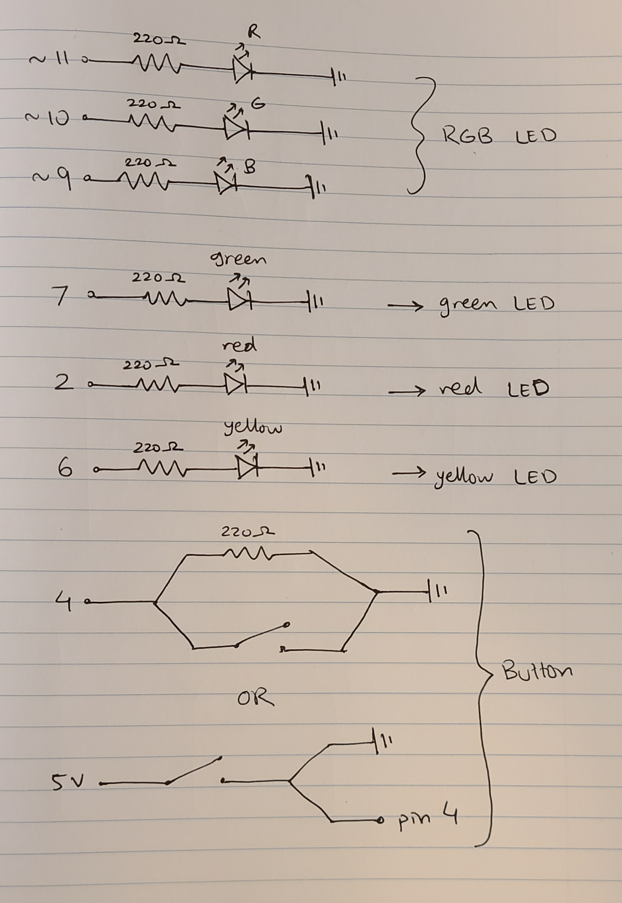

Atharv's Assignment 2: Fade!

Here is all the documentation for assignment 2!
Here is all the documentation for assignment 2!

This is a schematic diagram of the circuit I built and shows the 3 LEDs connected to the 3 different pins with a resistor of 220 ohms and a current output of 5V at the pins. The button has its own schematic towards the bottom and the RGB LED has its own schematic at the top of the image.


Here are some photos of the breadboard circuit where you can see all the connections from different angles.
Here is the Arduino code I wrote and used for this button/fade pattern:
/*
HCDE 439: Physical Computing (Winter '22)
Student: Atharv W
Assignment 2: Fade
Turns on the green LED to show the system is turned on and working.
When button is pressed (and held):
the green LED dimly blinks very fast (almost turned off)
the red and yellow LED turn on
the RGB LED fades in and out with a purple light
*/
// constants won't change. They're used here to set pin numbers:
const int buttonPin = 4; // the number of the pushbutton pin
const int redLED = 2; // the number of the red LED pin
const int yellowLED = 6; // the number of the yellow LED
const int greenLED = 7; // the number of the green LED
const int B = 9; // the number of the RGB LED pin for Blue
const int G = 10; // the number of the RGB LED pin for Green
const int R = 11; // the number of the RGB LED pin for Red
// variables will change:
int buttonState = 0; // variable for reading the pushbutton status
int brightness = 0; // variable for reading the pushbutton status
int fadeAmount = 5; // variable for reading the pushbutton status
void setup() {
// initialize the red LED pin as an output:
pinMode(redLED, OUTPUT);
// initialize the yellow LED pin as an output:
pinMode(yellowLED, OUTPUT);
// initialize the green LED pin as an output:
pinMode(greenLED, OUTPUT);
// initialize the pushbutton pin as an input:
pinMode(buttonPin, INPUT);
// initialize the RGB LED pins as an output:
pinMode(R, OUTPUT);
pinMode(B, OUTPUT);
}
void loop() {
// read the state of the pushbutton value:
buttonState = digitalRead(buttonPin);
// turn green LED on to show system is ready and working
digitalWrite(greenLED, HIGH);
// check if the pushbutton is pressed. If it is, the buttonState is HIGH:
if (buttonState == HIGH) {
// turn red LED on:
digitalWrite(redLED, HIGH);
// turn yellow LED on:
digitalWrite(yellowLED, HIGH);
// turn green LED off
digitalWrite(greenLED, LOW);
// set the brightness of pin 9:
analogWrite(R, brightness);
// analogWrite(ledG, brightness);
analogWrite(B, brightness);
// change the brightness for next time through the loop:
brightness = brightness + fadeAmount;
// reverse the direction of the fading at the ends of the fade:
if (brightness <= 0 || brightness >= 255) {
fadeAmount = -fadeAmount;
}
// wait for 30 milliseconds to see the dimming effect
delay(30);
} else {
// turn red LED off:
digitalWrite(redLED, LOW);
// turn yellow LED off:
digitalWrite(yellowLED, LOW);
// turn off RGB LED
for(int i=9;i<12;i++){
pinMode(i, INPUT);
}
}
}

Enjoy this gif I made!